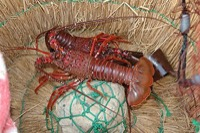

伊勢えびの漁獲量 都道府県ランキング
全19都道府県の順位と漁獲量
伊勢えびの漁獲量が全国で最も多いのは千葉県で、249 tです。全国（954 t）の26%を占めます。

| 順位 | 都道府県 | 漁獲量 | 全国に占める割合 |
|---|---|---|---|
| 1位 | 千葉県 | 249 t | 26% |
| 2位 | 三重県 | 119 t | 12% |
| 3位 | 和歌山県 | 72 t | 7.5% |
| 4位 | 宮崎県 | 71 t | 7.4% |
| 5位 | 徳島県 | 70 t | 7.3% |
| 6位 | 静岡県 | 63 t | 6.6% |
| 7位 | 茨城県 | 56 t | 5.9% |
| 8位 | 鹿児島県 | 50 t | 5.2% |
| 9位 | 高知県 | 46 t | 4.8% |
| 10位 | 長崎県 | 42 t | 4.4% |
| 11位 | 神奈川県 | 30 t | 3.1% |
| 12位 | 愛媛県 | 16 t | 1.7% |
| 13位 | 福島県 | 14 t | 1.5% |
| 14位 | 大分県 | 14 t | 1.5% |
| 15位 | 愛知県 | 10 t | 1.0% |
| 16位 | 熊本県 | 10 t | 1.0% |
| 17位 | 沖縄県 | 9 t | 0.9% |
| 18位 | 兵庫県 | 7 t | 0.7% |
| 19位 | 東京都 | 6 t | 0.6% |
伊勢えびの漁獲量の推移（令和2年〜令和6年）
全国の漁獲量は、令和2年の1,023 tから令和6年の954 tへ、7%減りました。1位は入れ替わっています（令和2年は三重県、令和3年は千葉県）。
| 年 | 全国 | 1位 | 2位 | 3位 |
|---|---|---|---|---|
| 令和6年 | 954 t | 千葉県249 t | 三重県119 t | 和歌山県72 t |
| 令和5年 | 1,090 t | 千葉県262 t | 三重県148 t | 和歌山県101 t |
| 令和4年 | 1,115 t | 千葉県238 t | 三重県163 t | 和歌山県112 t |
| 令和3年 | 1,063 t | 千葉県221 t | 三重県176 t | 和歌山県133 t |
| 令和2年 | 1,023 t | 三重県229 t | 千葉県188 t | 和歌山県130 t |
この数字について
- 分類：海老の仲間
- 全国の漁獲量：954 t
- この数字が表すもの：漁獲量（海面漁業の漁獲量。養殖は含みません）
- 調査：海面漁業生産統計調査（海面漁業） 令和6年
- 19県分を調査（調査していない県は順位に入りません）
伊勢えびの漁獲量について、よくある質問
- 伊勢えびの漁獲量が日本一の都道府県はどこですか？
- 千葉県です。海面漁業生産統計調査（海面漁業）（令和6年）で249 tでした。
- 伊勢えびの漁獲量ランキング2位・3位はどこですか？
- 2位は三重県（119 t）、3位は和歌山県（72 t）です。
- 伊勢えびの漁獲量ランキング4位・5位はどこですか？
- 4位は宮崎県（71 t）、5位は徳島県（70 t）です。伊勢えびの全19県の順位は上の表のとおりです。
- 伊勢えびの全国の漁獲量はどれくらいですか？
- 954 t（令和6年）です。